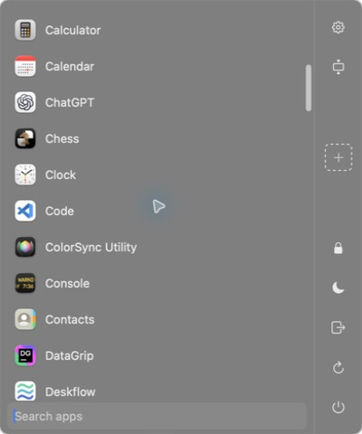
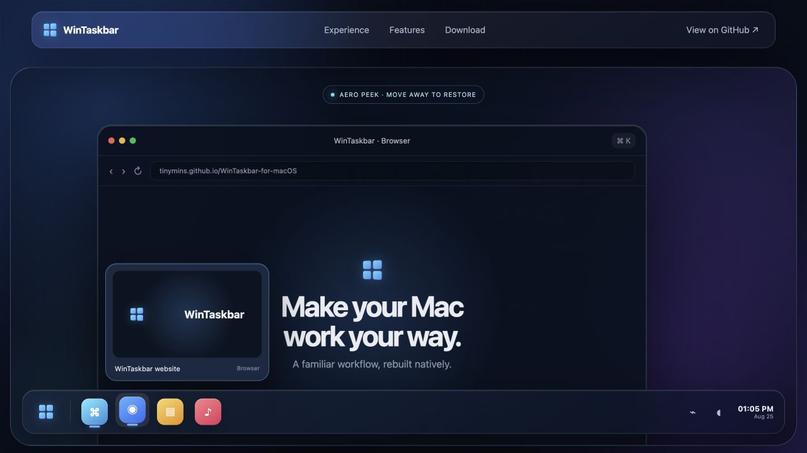

01
A taskbar that belongs on your Mac
Pin favorites, see running apps, read notification badges, reorder by drag, and place the bar on any screen edge.
A familiar workflow, rebuilt natively.
Pin favorites, see running apps, read notification badges, reorder by drag, and place the bar on any screen edge.
Search apps, build folders, drag in shortcuts, and reach the controls you use every day.

Preview every window, then use Aero Peek to isolate exactly the one you want without disturbing your desktop.

Bottom, top, left, or right—with primary-only and all-display modes.
Built with AppKit and SwiftUI for a lightweight, Mac-first experience.
Thumbnails, hover previews, activation, minimization, and fitting around the bar.
Calendar, battery, volume, Wi-Fi, input source, power actions, and Show Desktop.
Reorder apps, create folders, and drop apps or files directly into shortcuts.
Twelve bundled languages, reduced-motion support, and native accessibility.
Choose the universal build for any modern Mac, or download an architecture-specific package.